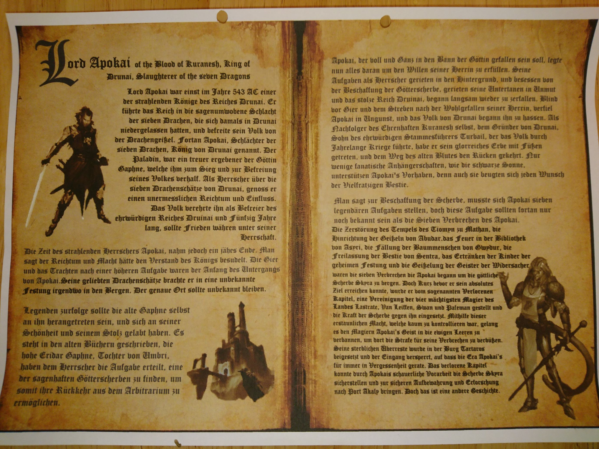

Created Sonntag 02 Februar 2020
- Kult im arkenwood (wayward mine) betet ihn an
- hängt mit mord an quinn zusammen, wahrscheinlich auch mit einer weiteren scherbe (Götter):
grim weiß dass legende:
Gaphne früher auf falschem Weg
alter König Apokai von Drunai wollte Gunst von ihr und das hat irgendwelche dunkle, verdorbene sachen gegeben
moderne anhänger der Gaphne bestreiten das
-> gefundenes geschichtsbuch vom kult bestätigt das:alter König Apokai von Drunai wollte Gunst von ihr und das hat irgendwelche dunkle, verdorbene sachen gegeben
moderne anhänger der Gaphne bestreiten das

Fyona Abgestammte von Apokai, unklar was da die Geschichte ist
Ritual in der Wayward Mine, arkenwoods:
- shakal steckt axt in halterung, hat keinen unterkiefer oder zunge
- zieht krummen dolch mit goldener klinge
- axt spricht mit schwarzem nebel um sie, schallende stimme
- "großer erleuchteter vom blute kuranesh, bezwinger der sieben drachen, letzter könig von drunai, herold der vielfratzigen bestie; nach 600 jahren endlich so weit, die klinge des großvaters ist bereit das Blut seiner LInie zu empfangen, oh schattenprinz; bringt den abkömlich!" bringen blaue tieflingfrau mit halskrause (Fyona);
- er nimmt dolch, kopf von Fyona und will ihre kehle über schüssel durchschneiden
- gestallt aus schatten manifestiert sich, übermenschlich groß, mit Hörner "vergieß nicht zu viel vom königlichen Blut"
- shakal schneidet ihr wrist an
- manticore werden released, sie gleiten auf altar zu
- alle flammen in höhle erlöschen, gleißendes licht vom altar
- schattengestalt wird klarer, man kann genaue umrisse erklären
- kultisten und shakal schweben 2 m in die Luft
- viele, viele Blitze, trffen kultisten+manticore, die sich auflösen in rauchwirbel, wind in höhle treibt rauch auf gestalt zu
- "habt dank für eure hingabe, meine diener, treten in meine armee der schatten, versammelt euch am ort meiner auferstehung und kömpft auf der seite eures gebieters, aufdass wir die vielfratzige bestie"
- gleißende, weiße gestalt manifestiert aus schattengestalt nachdem rauch weg ist
- shakal lebt noch, Fyona auch, gestalt sagt er habe ihm einen guten dienst erwiesen; muss aber noch etwas erledigen; gestalt channelt rauch in axt -> axt wird von schattenhafter energie umkreist
- "erledige deine aufgabe, finde ausgrabungsstätte des zauberers, bringt info zu mir nach thartaros/dem ort meiner auferstehung; mein blut und den wissenden (=Fyona und Kroft)), bringt ihn zu mir und vergesst nicht: alles was ich brauche sind die informationen"
- gestalt verschwindet und alle fackeln gehen wieder an
- nur mehr shakal, Fyona da, sonst alles leer, shakal nimmt Fyona mit durch zwergentor, geht zu
Erste Kammer in dwarven citadel
- wir (jetzt mit Durbul) finden shakal wenig später mit Fyona und 1 gefesseltem manticore
- wir bekämpfen shakal, ein paar kultisten kommen dazu, dann flieht Shakal und lässt uns mit ein paar Kultisten und Velmonde zurück
- er erwähnt noch, dass er mit Fyona und dem alchemisten entkommen und "den reaktor ausschalten" will
Zweite Kammer in dwarven citadel
- großer, schwarzer raum mit blau blitzendem ding in der mitte
- in der mitte instabiles konstrukt, wohl zerbrochen, brocken schweben in der luft
- leute an säule gefesselt, überall käfige, überall tote mit halskrausen, komplett ausgedörrt
- schläuche von ihren venen führen in den "reaktor"
- durbul geht zu einem mit schlauch, zieht schlauch heraus und mercykillt ihn auf wunsch -> ding in der mitte unverändert
- er geht zum nächsten, befragt seinen spirits: in der mitte altar mit hebel, der raum war wohl zum aussaugen der caster
- durbul versucht mit javelins den hebel zu betätigen, javelin zerfällt durch die energie in staub
Top von dwarven citadel
- shakal, fyona und kroft dort
- kommt wieder schattenhafte energie, geht durch uns durch, wir können uns nicht bewegen (incapacitated)
- aus schatten kommt riesisge, gehörte figur: apokai
- man hört eiskalte, scheußliche stimme "shakal, mit meinen neuen kräften brauche ich nicht mehr als seinen kopf, um ihn sprechen zu lassen. bringt ihn mir und das monster, das du für mich geschaffen hast. nur das hat priorittät. verlasse nun das sinkende schiff und lass diese maden in den trümmern vergehen"
- Riesenmanticore trägt shakal + kopf von Fenton Kroft weg